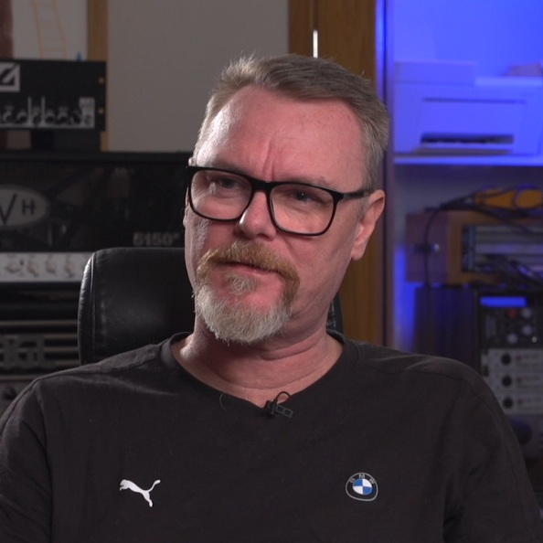

Chapter 9: Guitar & Bass Engineering
Low-end management, dynamic EQ, and the wall of sound.
Navigate Chapters
Guitar and bass processing form the tonal centre of metal production, as they occupy the majority of the frequency spectrum and define the music's textural character. Our research documented different approaches to engineering these instruments, with specific techniques that varied dramatically between producers, yet shared common conceptual foundations.
Guitar Tone Development
All producers agreed that guitar heaviness begins at the source, with appropriate amplification, cabinet selection, and microphone placement. In the 'In Solitude' mix, all producers but Scheps and Exeter reamped the provided DI tracks or used amplifier simulation1 to craft their signature high-gain sound, rather than working with pre-recorded guitar tracks (Figure 9.1). This approach emphasizes a central principle: in metal production, the foundational guitar tone must be established before mixing begins.
Several key approaches to guitar processing were observed:
- Dynamic Low-End Management: Most producers applied multiband compression or dynamic EQ2 on guitars, which targets frequencies below 200 Hz. This technique, used by producers like Fredrik Nordström as early as in the early 1990s, addresses a great challenge in heavy music: palm-muted guitar creates overwhelming low-frequency energy that can mask3 bass guitar and kick drum.
'I would compress the bass frequencies of the guitar whenever the guitarist palm-mutes and causes a low-end build-up', Nordström explained. 'In practice, I set a multiband compressor on guitars that kicks in around <200 Hz whenever needed to reduce ~2-3 dB on chugging parts'. This selective compression maintains guitar heaviness while creating space for other elements to cut through.
"I try to get rid of bass in the rhythm guitars; that's just like the bass's own area. That's where it is together with the bass drum. And if they work together, you can hear the bass and also hear the bass drum and punch in the bass drum."

- Frequency Allocation Philosophy: Building on the meta-instrument frequency relationships described in Chapter 7, several producers challenged conventional high-pass filtering4 approaches. Middleton high-passed at only 70 Hz, while Getgood filtered at just 60 Hz, allowing guitars to contribute substantially to perceived low-end heaviness.
As Andrew Scheps noted, 'In modern metal, guitars often act as much in the low-end as the bass does because bass is distorted and thus has a lot of mid content... their low-end is being borrowed by the guitars'. This inversion of traditional frequency allocation creates the characteristic "wall of sound" effect where guitars and bass blend into a unified low-end mass rather than occupying separate spectral regions.
- Width Enhancement Strategies: Stereo guitar treatment revealed another spectrum of approaches. All producers double-tracked rhythm guitars (panning one take left, another right), but with significant variations in implementation. All producers but Odeholm employed quad-tracking5 for enhanced thickness. Getgood and Middleton applied psychoacoustic widening techniques6 to create a stereo spread that exceeded the natural width of panned guitars. Exeter and Scheps achieved similar width through EQ differentiation: they applied slightly different equalization to left and right guitar channels, creating a perceived width enhancement without dedicated widening processors (Figures 9.2–9.3).


Our analysis showed that distinct EQ treatment between channels could create a stereo image as expansive as specialized widening techniques and offer a more transparent alternative to psychoacoustic processing.
Bass Guitar Processing
Bass treatment varied considerably between producers, which reflects different conceptual approaches to its role in the meta-instrument:
- Extreme Dynamic Control: All producers applied substantial compression to bass but with varying philosophies. Bogren, Getgood, and Middleton employed aggressive limiting7 and multiband compression to create what Odeholm described as a 'sausage of low-end', an extremely consistent dynamic profile where every note maintains identical power regardless of playing dynamics. This approach ensures the bass foundation remains stable throughout various performance techniques.
In contrast, Exeter and Scheps exercised more restraint by using automation to manage dynamics rather than heavy compression. 'I rode the fader on the combined bass signal to manage its dynamics, preserving the natural tone', Exeter explained, maintaining more of the original performance character.
- Split-Band Distortion: Bass distortion techniques offered a valuable insight into frequency management. Most producers applied distortion selectively to mid and high frequencies while keeping low frequencies relatively clean. Bogren and Middleton exemplified this approach by distorting only the upper harmonics8 to maintain clarity in the fundamental range.
Odeholm, however, challenged convention by applying 'heavy distortion across the entire bass spectrum', considering it essential for consistency. This technique requires exceptional control to avoid creating mud, but when executed correctly, it creates a bass tone that simultaneously provides low-end foundation and midrange aggression.
Practical Implementation
The research documented that regardless of philosophical approach, achieving heavy guitar and bass sounds involves addressing several universal challenges:
- Palm-mute control: Managing the resonant booms that occur during chugging passages through multiband compression or dynamic EQ.
- Frequency management: Ensuring kick, bass, and guitar spectra work together rather than competing, whether through regular EQ, multiband compression, or sidechaining.
- Distortion management: Applying distortion strategically across frequency bands to maintain both clarity and aggression.
- Dynamic consistency: Creating a stable foundation that maintains impact throughout varying performance intensities.
The most successful productions addressed these challenges while maintaining the core musical identity of the material, using technology to enhance rather than override the compositional intent.
"I've found my sound, and I just want all my mixes to have the same quality and vibe. Tone‑matching ensures the bass guitar in this new song has a similar frequency balance to the bass on my other mixes."
Endnotes
- Software plugins that replicate hardware amplifiers, cabinets, and microphones. ↩
- Equalization with compression-like controls for specific frequency bands. ↩
- Overlap with and obscure. ↩
- Removing frequencies below a specific point. ↩
- Recording and blending four takes of the same performance, two tracks per side. ↩
- Processes that create perceived width beyond simple panning. ↩
- A form of compression that prevents signals from exceeding a specified threshold. ↩
- Higher-frequency overtones above the fundamental frequency. ↩